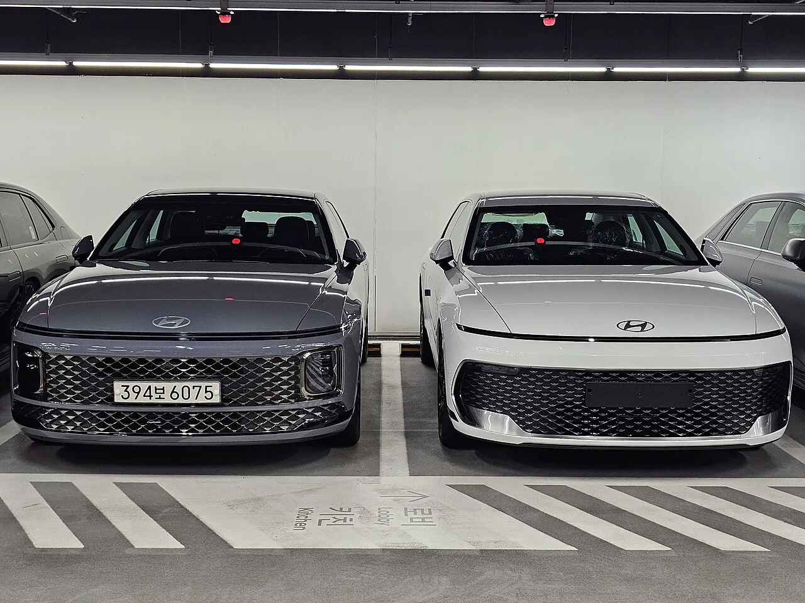

▲ 현대차 노조가 합법적 파업권을 확보하면서 울산·아산 등 주요 생산 거점의 가동 차질 우려가 커지고 있다 ⓒ Wikimedia Commons (CC BY 2.5)
"이번 달 안에 계약한 그랜저, 제때 받을 수 있을까." 최근 온라인 자동차 커뮤니티에는 이런 걱정 섞인 글이 올라오고 있습니다. 배경은 현대차 노조의 파업권 확보입니다. 전국금속노동조합 현대자동차지부는 지난 6월 24일 쟁의행위 찬반투표에서 투표자 대비 92.03%, 전체 조합원 대비 86.65%의 찬성률로 파업을 가결했고, 다음 날인 25일 중앙노동위원회가 노사 간 입장 차가 크다며 조정 중지 결정을 내리면서 합법적으로 파업에 나설 수 있는 절차적 요건을 모두 갖췄습니다. 이후 노조는 7월 13~15일, 7월 29~31일 두 차례에 걸쳐 실제 부분파업에 돌입했고, 8월 11일 중앙쟁의대책위원회에서 추가 투쟁 수위를 논의할 예정이어서 하반기 내내 생산 차질 이슈가 이어질 가능성이 있습니다.
1. 파업권 확보 경위 — 조정 중지까지 온 이유
현대차 노조는 지난 6월 15일 중앙노동위원회에 노동쟁의 조정을 신청하며 본격적인 쟁의 절차에 들어갔습니다. 조정 기간 동안 노사가 입장 차를 좁히지 못하자, 조합원 과반 찬성을 조건으로 6월 24일 쟁의행위 찬반투표를 진행했고 전체 조합원 3만9,668명 중 3만7,348명이 참여(투표율 94.15%)해 92.03%라는 압도적인 찬성률로 파업을 가결했습니다. 이튿날 중앙노동위원회는 노사 간 입장 차가 크다고 판단해 조정 중지를 결정했고, 이로써 노조는 합법적인 파업권을 손에 넣었습니다.
이후 실제 파업도 이어졌습니다. 노조는 7월 13일부터 15일까지 사흘간 주·야간조가 각각 2시간씩 부분파업을 벌였고, 업계에서는 이 기간 약 5,000대의 생산 차질과 2,000억원 규모의 매출 손실이 발생했을 것으로 추산했습니다. 여름휴가를 앞둔 7월 29일부터 31일까지도 매일 4시간씩 추가 부분파업이 진행되며 휴가 전 타결은 사실상 무산됐습니다. 노사는 임금 인상 폭과 성과급 지급률, 정년 연장, 주 4.5일제 도입 등을 놓고 평행선을 달리고 있으며, 노조는 8월 3~7일 하계휴가 이후인 11일 중앙쟁의대책위원회를 열어 추가 파업 여부와 수위를 결정할 방침입니다.
| 항목 | 노조 요구안 | 사측 제시안 |
|---|---|---|
| 기본급 인상 | 월 14만9,600원 | 월 8만9,000원 |
| 성과급 | 전년도 순이익 30% | 성과금 350% 등 |
| 정년 연장 | 최장 64세 | 미수용 |
| 근무제 | 주 4.5일제 도입 | 미수용 |
2. 생산 차질 우려 차종과 소비자 영향

▲ 지난 5월 출시된 신형 그랜저(GN7 PE, 오른쪽)는 출시 첫날에만 1만 대 넘게 계약되며 인기를 끌었지만, 파업이 장기화하면 인도 지연이 불가피하다 ⓒ Damian B Oh, Wikimedia Commons (CC BY-SA 4.0)
현대차가 하필 이런 시점에 파업 리스크를 안게 된 이유는 최근 신차 출시 일정과 맞물려 있기 때문입니다. 지난 5월 14일 출시된 7세대 부분변경 모델 '더 뉴 그랜저(GN7 PE)'는 출시 첫날에만 1만277대가 계약되고 6월 한 달간 1만62대가 팔릴 만큼 반응이 뜨거웠던 차종입니다. 그랜저는 아산공장에서 생산되는데, 이번 파업으로 아산공장을 포함한 현대차 전 사업장이 부분 생산 중단에 들어간 것으로 확인됐습니다. 여기에 지난 6월 26일 2026 부산모빌리티쇼에서 세계 최초로 공개돼 3분기 출시를 앞둔 8세대 완전변경 모델 '디 올 뉴 아반떼(CN8)'도 영향권에 있습니다. 아반떼는 통상 울산 3공장에서 생산돼온 만큼, 파업이 장기화하면 신차 초도 물량 확보에도 차질이 생길 수 있다는 우려가 나옵니다.
업계에서는 이미 두 차례 부분파업으로 최소 수천 대 규모의 생산 차질이 발생한 것으로 보고 있으며, 8월 11일 쟁대위 결정에 따라 전면파업 등 투쟁 수위가 높아질 경우 생산 손실 규모가 1조원을 넘어설 수 있다는 관측도 나옵니다. 완성차 업계가 주문 생산 비중을 늘려온 만큼, 공장 가동 차질은 곧바로 계약자들의 출고 지연으로 이어질 가능성이 큽니다. 다만 아직 특정 트림이나 개별 계약 건에 대한 구체적인 지연 일정이 공식 발표된 것은 아니며, 실제 인도 지연 여부와 폭은 8월 이후 교섭 진행 상황에 따라 달라질 수 있다는 점은 유의해야 합니다.